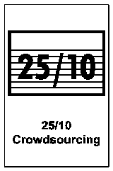

25/10 Crowd Sourcing
In breve - 25/10 Crowd Sourcing è una Liberating Structure per raccogliere molte idee e farle valutare dal gruppo in circa 30 minuti. Ogni persona scrive una proposta su un cartoncino; i cartoncini girano e ricevono voti da 1 a 5 fino a emergere le migliori.
- Durata
- 30 minuti
- Difficoltà
- Intermedia
- Gruppo
- gruppi da 15 a 100 persone
- Fase
- Ideare
Domanda da portare
- "Se fossi dieci volte più coraggioso, quale grande idea proporresti? Quale primo passo faresti?"
- "Quale decisione vorresti annullare? Qual è il primo passo per farlo?"
- "Quale conversazione coraggiosa stai evitando?"
Cosa ti serve
- Spazio aperto: i partecipanti stanno in piedi e si muovono.
- Un cartoncino A6 per persona (più il 10% di scorta).
- Su un lato: idea audace e primo passo concreto. Sull'altro: cinque caselle numerate per i voti (1-5).
I passaggi
Spiega il processo: scrivere, passare, votare in silenzio
5 minFai una dimostrazione rapida di come si passa e si vota un cartoncino
Ognuno scrive la propria idea e il primo passo sul cartoncino
5 minFase "gira e passa": i cartoncini circolano; ogni persona legge e assegna un voto da 1 a 5
15 minRaccogli i cartoncini e somma i punteggi; leggi ad alta voce le dieci idee con voto più alto
5 min